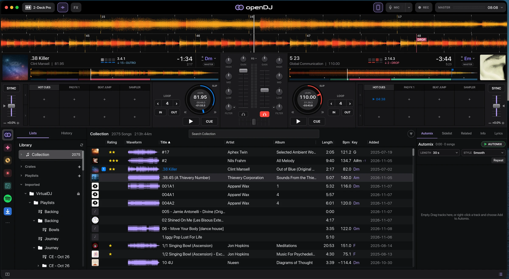
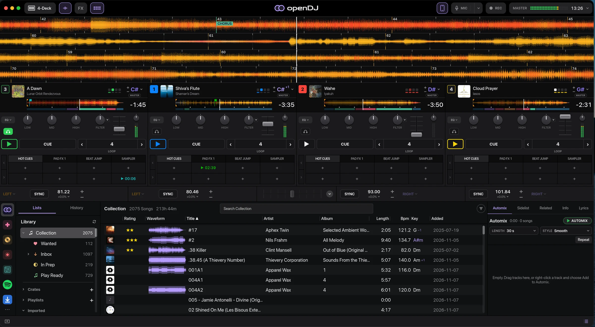
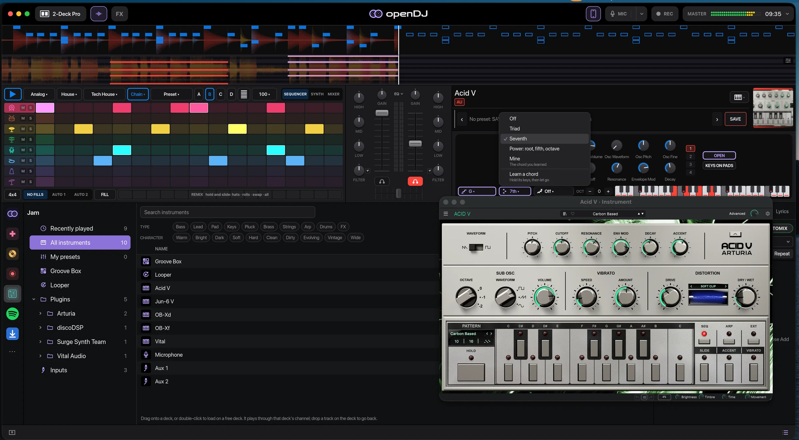
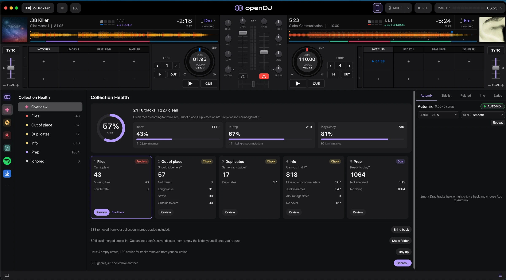
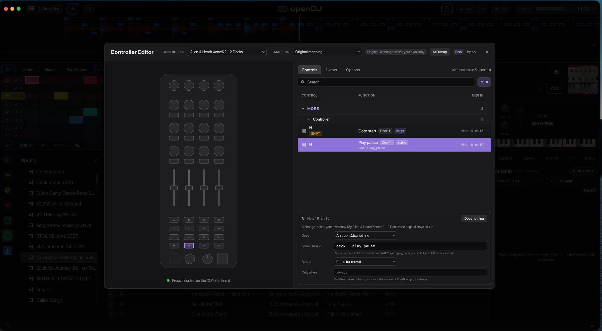
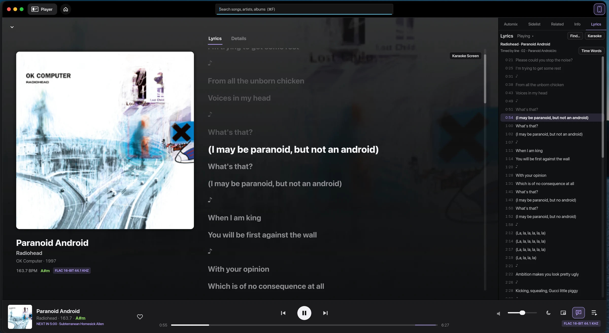

Free, open-source DJ software
openDJ plays your own music files, keeps your collection in shape, and works with over 140 controllers. It runs on macOS, Windows and Linux, is written in Rust, and is released under the GPL.
openDJ grew out of Mixxx, the long-running open-source DJ project, and still runs its controller mappings. Many thanks to the Mixxx developers and community.
Download openDJ macOS · Windows · Linux


Features
Decks and mixing
Two or four decks with sync, key lock, hot cues, loops, slip mode and twelve pad modes. Clean GPU waveforms with bar counters and phrase markers, in layouts from a simple player to four decks.
Collection and Health
Your music folders as crates, playlists and smart lists. The Health tool finds missing files, duplicates and bad tags, and fixes names and covers from MusicBrainz and Discogs. Every fix can be undone.
Beat grids, keys and phrases
Neural beat detection with straight or dynamic grids, key detection for harmonic mixing, and phrase detection for intros, builds, drops and outros.
Stems
Vocals, drums, bass and other on load, with high-quality HTDemucs stems prepared in the background. Stem pads and stem FX. Everything runs on your computer.
Effects and plugins
18 built-in effects locked to the beat grid, plus your own CLAP, VST3 and Audio Unit effects, each in its own crash-safe helper process.
Jam
A tempo-synced Groove Box with 808, 909 and 606 style kits, and your own plugin synths with scale, chord and arpeggiator modes.
Automix and phone remote
Beatmatched Automix that blends on phrases, and a phone remote over Wi-Fi to queue, search and set a sleep timer.
Sources
Browse Spotify, TIDAL, Apple Music, SoundCloud and Mixcloud (read only); tracks you own play from your files. Plex, Navidrome and Jellyfin servers too.
Controllers
140+ MIDI controllers through Mixxx's mappings, Traktor Kontrol HID controllers, and a Controller Editor with MIDI learn.
Imports, recording and sync
Imports from rekordbox, VirtualDJ, Traktor and Mixxx with cues and grids. Record to WAV or FLAC, stream to Icecast, Ableton Link, MIDI clock and OSC.
Screenshots










Download
macOS
Apple Silicon and Intel, macOS 11 or newer. Signed and notarized, updates itself.
Download for MacLatest releases
- openDJ 0.6.0 10 Nov 2026
- openDJ 0.5.1 6 Nov 2026
- openDJ 0.5.0 5 Nov 2026
- openDJ 0.4.6 31 Oct 2026
About
openDJ is built with love in Oakland, CA by DJ Nahuel, and grows with the people who use it. Bugs and ideas go to GitHub; the docs cover every part of the app.
If openDJ plays a part in your sets, you can support its development: ☕ Buy me a coffee
Want to try new builds early? Become an openDJ Steward: test your controller, report bugs and vote on features.